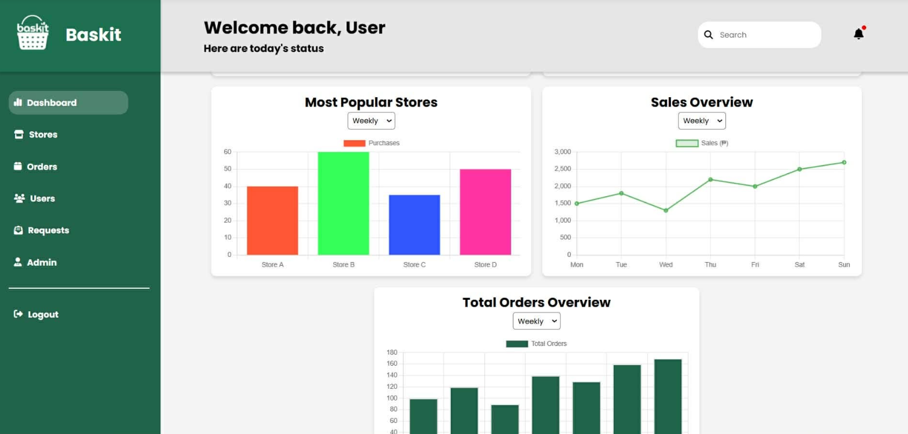

Project Case Study
Baskit
A grocery-list and pickup experience designed to help busy customers buy fresh market products without spending unnecessary time shopping in person.

Project visuals
The project spans a customer-facing mobile marketplace and a web dashboard for monitoring stores, orders, users, and purchasing activity.


The problem
Fresh market shopping can take significant time for customers with busy schedules, yet many still prefer local products and trusted in-person pickup.
The solution
Baskit lets customers browse market products, prepare a personalized grocery list, generate a collection code, and have a trusted shopper prepare the order for branch pickup.
My contribution
- Designed the customer journey from browsing to pickup.
- Created mobile and web interface concepts.
- Developed front-end screens and reusable components.
- Clarified list management and collection-code interactions.
Core workflow
- Browse local market products
- Create and update a grocery list
- Generate a unique collection code
- Assign preparation to a trusted tagabili
- Collect prepared items at the selected branch
Challenge and response
The experience needed to feel faster than conventional shopping. I kept the flow linear and reduced unnecessary decisions between adding products and generating the pickup code.
What I learned
Baskit developed my ability to map service workflows, simplify multi-step transactions, and design interfaces around practical time-saving goals.
Want to discuss this project?
I can walk through the user journey and interface decisions during an interview.